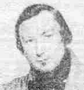

|
Ar sorcerez. - Version 1 me ne moa ket hoas pemzek bloa ag a woar desket mad a ouie kana ar prefaç Kouls ag an ofern bred. La la lan la la ri la Konsacri an ostiou d'in ma vije permetet -liverit tu dime plachik gant piou o c'heus desket gant piou o c'heus desket ar secrejo pere La la lan la la ri la ar secrejo pere ouzoc'h a leveret. -Gant eur sklolaer yaouank er gher en ti va zad em kasse gantan beb nos da klevet ar sabad. Kenta ma klevis ar sabad me a voa souezet ho klevet ar sorcerien ag ar sorcerezet ho c'helvel dre o louzou evit Goali an ed. Kenta ma aprouvis ma louçou da welet ag hi woa mad e woa var eur goarimad segal er ger en ti va zad. nag a woa ed de adda na trivarc'h boezeled ha ne voa ked bed a nezan trivac'h skudellad mad. me meus eur c'houffrik bahut er gher en ti ma zad Piou benag en digoro en devo kalonnad. a zo enan teïr aër viber o viri eur serpant ag e devoro ar vro man tout en antieramant Mar deus va teïr aër viber da ober eur blaves mad e rankin bea kunduet gant boued dilikat. nen deo ket gant kig klujar na gant kig kevelek gant goad ar vugale munut, kig an innoçantet, Kassit va c'hoffrik bahut en eur fark a tri korn Lakit an tan den dewi a pelait diontan. Me ia breman dar maro pa em boa miritet Balamour dam sorcerejou pere am boa desket. Anaïc Cozic septembre 1850 |
Ar sorserezh Me n'em-boa ket c'hoazh pemzek bloaz Hag a oa desket mat-, A ouie kanañ ar Prefas Koulz hag an oferenn-bred, La la lan la la ri la Konsakriñ an ostioù Din ma vije permetet. - Lavarit-hu din-me, plac'hig, Gant piv ho-peus desket Gant piv ho-peus desket Ar sekrechoù pere La la lan la la ri la Ar sekrechoù pere Ouzoc'h, hervez ma larit. - Gant ur skolaer yaouank e gêr, en ti va zad. Am c'hase gantañ bemnoz da gleved ar Sabad. Kentañ ma gleviz ar Sabad, me oa souezhet O kleved ar sorserien hag ar sorserezhed O c'helver dre o louzoù ewit gwallañ an êd. Kentañ ma aprouviz va louzoù Da welout hag hen oa mat. E oa war ur gwaremmad segal Er gêr, en ti va zad. Nag a oa aet da hadañ na triwec'h boezellad Ha ne oa ket bet anezañ triwec'h skudellad mat. Me 'm'eus ur c'houfrig bahut er gêr, en ti va zad, Piv bennak hen digoro e-nevo kalonad. A zo ennañ teir naer-wiber o viriñ ur serpant. Hag e tevoro ar vro-mañ toud en antieremant. Mar d'eus va teir naer-wiber d'ober ur bloavezh mat E rankint bezañ konduet gant boued dilikat. Ned'eo ket gant kig klujar na gant kig kefeleg. Gant gwad ar vugale munud, kig an inosanted. Kasit va c'houfrig bahut en ur fark a dri gorn, Lakit an tan hen deviñ ha pellait dioutañ. Me ya bremañ d'ar marv p'em-boa meritet, 'Balamour d'am sorserechoù pere am-boa desket. Anaik Kozik - e viz Gwengolo 1850 |
La sorcière - Je n'avais pas quinze ans Que j'étais fort instruite. Je savais chanter la Préface Ainsi que la grand-messe, La la lan la la ri la Et consacrer les hosties Si on me l'avait permis. - Dites-moi, jeune fille, de qui avez-vous appris de qui avez-vous appris Les secrets que La la lan la la ri la Les secrets que Que vous dites détenir? - D'un jeune écolier qui vivait chez moi, dans la ferme de mon père. Il m'emmenait avec lui toutes les nuits ouïr le sabbat. La première fois que j'ouïs le sabbat, je fus surprise D'entendre sorciers et sorcières Evoquer leurs philtres pour gâter le blé. La première fois que j'éprouvai mon philtre, Pour voir s'il était efficace, Ce fut dans une lande semée de seigle, Chez moi, dans la ferme de mon père. Or, on avait semé au moins dix-huit boisseaux Et ils n'ont pas fourni dix-huit bonnes écuellées J'ai un petit coffre -bahut chez moi, à la ferme de mon père. Quiconque l'ouvrira, le regrettera Il contient trois vipères qui couvent (chacune) un serpent. Ceux-ci dévoreront ce pays d'un bout à l'autre. Pour permettre à mes trois vipères de bien vivre un an Il faudra leur fournir une nourriture délicate: Non point de la chair de perdrix, ni de la chair de bécasse Mais du sang de nouveaux-nés, de la chair d'innocents. Mettez mon petit coffre -bahut dans un champs triangulaire, Mettez-y le feu et éloignez-vous de lui!. Je m'en vais désormais vers la mort que j'ai méritée Pour m'être laissé enseigner des sortilèges. ..... |
|
Sorcerez - Version 2 Sellaouit hag e kleffot, hag he kleffot kana eur wers a zo kompozet a neve vid ar bla. zo gred da Katellik ar Gall peni deus gred peni deus gred sorcerez evid laza an ed. - Katellik ar Gall deom leveret Peni eo al louzou evid laza an ed? - Kenta ma haprouvis, haprouvis va louzou Da c'houd ag en a voa mad, c'houd ag en a voa mad. e voa en eur warimad eur warimad segal hag en devoa va zad hag en devoa va zad a voa adet heni trivarc'h boëzellad ad ne neus ked bed anezi daouzek skudellad vad. - Ar ça ta Kattelik dem-ni a leveret dem-ni a leveret gant piou o c'heus disket? ar secrejou a c'houzorc'h evid laza an ed? - na gand eur c'hloarek iaouank a voa e ti va zad am c'hasse bem-nos bem-nos na gantan d'ar Sabad. Ar ca ta Katellik dem-ni a leveret Pere e ta al louzou evid laza an ed? - gant lagad kleï eul malfran a kalon an toussek ar voëden radenen noz goel ian dastumet Bed dindan an oter c'houel epad an offern bred ar re ze eo va louzou evid laza an ed. Me meus eur c'houffrik peun( 1) e bars e ti va zad Ag 'n ini en tigoro en deve'o kallonad. Zo henan teïr aer viber e gori eur serpent kapab da leski ar bed man perpetuellamant. na mar deu dezo gouri ag ober blavez mad he renko va zeïr aer beza konduet mad nan deo ket gant kig klujar na gant kig kevellek gant ar bugale vunut a ben ma veint badeet - Ar ça ta Katellik ar Gall, c'houi o c'heus meritet Ar maro sertenamant pa distrujit an ed. - eun ivis rousinet a voa dei' gouisket eun torch koar ellumet vid e lakad dar maro p' e dewa meritet. Ma rache reflexion var ne'i an oll plac'het Da ziwel sertenamant doc'h vissou fal ar bed. Jannton Puil, 16 juin 1851. (1) Ms : peun : faut-il lire : prenn ? |
Sorserez -Version 2 Selaouit hag e klevoc'h kanañ Ur werz a zo kompozet a-nevez vit ar bloaz. Zo graet da Gatellik ar Gall pehini 'deus graet Sorserezh evit lazhañ an êd. - Katellik ar Gall deomp lavarit Pehini eo al louzoù evit lazhañ an êd? - Kentañ ma aprouviz va louzoù, Da c'hoût hag hen a oa mad, E oa en ur waremmat segal Hag e-nevoa va zat. A oa hadet hini triwec'h boezellad had: N'e-neus ket bet anezhi daouzek skudellad vat. - Arsa-ta, Katellig, deomp-ni lavarit, Gant piv ho-peus disket Ar sekrechoù a c'houzoc'h evit lazhañ an êd? - Na, gant ur c'hloarek yaouank a oa e ti va zad, Am c'hase bemnoz -bemnoz da gantañ d'ar Sabad. - Arsa-ta, Katellig, deomp-ni a lavarit, Pere eo ta al louzoù evit lazhañ an êd? -Gant lagad kleiz ur mal-vran ha kalon un touseg, Ar vouedenn raden en noz Gouel Yann dastumet Bet dindan an aoter uhel epad an oferenn bred Ar re-se eo va louzoù evit lazhañ en êd. Me 'meus ur c'houfrig prenn e-barzh ti va zad Hag an hini hen tigoro e-nevo kalonad. A zo ennañ teir naer-wiber o c'horiñ ur serpant Kapab da leskiñ ar bed-mañ perpetuelllamant. Na mar deu dezo goriñ hag ober bloavez mad, E renko va zeir naer bezañ konduet mad, Ned'eo ket gant kig glujar, na gant kig keveleg, Gand ar vugale vunut, a-benn ma vezint badezet. Arsa-ta Katellig ar Gall, c'hwi ho-peus meritet Ar marv sertenamant pa distrujit an êd. Un hiviz rousinet a oa dezhi gwisket Un torch koar elumet Evit he lakaad d'ar marv pa he-devoa meritet. Ma raje refleksion warnezhi an oll plac'hed Da ziwall sertenamant d'oc'h visoù-fall ar bed. |
La sorcière - Version 2 Ecoutez! Vous allez entendre chanter Une complainte, nouvellement composeée, cette année. Elle fut faite sur Catherine Le Gall, laquelle s'est faite Sorcière pour tuer le blé. - Catherine Le Gall, dites-nous, Quel est le philtre qui sert à tuer le blé? - Le première fois que j 'éprouvai mon philtre Pour savoir s'il était efficace, Ce fut dans une lande semée de seigle Qui appartenait à mon père. Il y avait semé dix-huit boisseaux de semence, Il n'en a tiré que douze bonnes écuellées. - Eh bien, Catherine, dites-nous De qui tenez-vous donc Les secrets que vous connaissez pour tuer le blé? - D'un jeune clerc qui vivait chez mon père. Il m'mmenait toutes les nuits avec lui au sabat. - Eh bien, Catherine, dites-nous, Quel est donc ce philtre qui tue le blé? - L'oeil gauche d'un corbeau mâle et le coeur d'un crapaud, La pulpe de fougére ramassée la nuit de la Saint Jean En dessous du maître-autel, pendant la grand-messe: Ce sont les ingrédients de mon philtre pour tuer le blé. J'ai un petit coffre de bois dans la maison de mon père Et celui qui l'ouvrira en éprouvera du regret. Il y a dedans trois vipères qui couvent un serpent Capables de consumer ce monde à tout jamais. Si elles parviennent à les couver pendant une bonne année, Mes trois vipères devront être traitées avec précaution: Ce n'est pas de la chair de perdrix ni de bécasse Qu'il leur faut, mais celle de petits enfants, à peine baptisés. - Eh bien, Catherine Le Gall, vous avez mérité La mort, certainement, si vous voulez détruire le monde. - Une chemise enduite de résine on lui passa, Une torche de cire fut alllumée Pour la livrer à la mort qu'elle avait méritée. - Pensez à elle, vous toutes, jeunes filles, Prenez garde aux vices du monde. - Jeanneton Puil, 16 juin 1861. |
|
I was not yet fifteen. But a learned girl was I: I could sing the "Preface" As well as the High Mass, Consecrate the host, if I had been allowed. - Tell me, child, by whom were you taught The secrets that you claim to possess? - By a young clerk who worked in our farmstead. He used to take me with him, every night, to the Sabbath. When I first heard the Sabbath, I was astonished At hearing the sorcerers and witches |
Invoke their philtres to spoil the wheat. When I first tested my (own) philtre To see if it was good, It was on a reclaimed land sown with rye On my father's farm. Now, they had sown there at least sixteen bushels, But they reaped not even sixteen good bowlfuls of rye! I have a little chest in my father's house Whoever would open it would regret. It contains thee vipers, each brooding on an egg, Devised to ruin the country from end to end |
If they are to survive the first year, They must be fed on choice food. Not on partridge or snipe flesh, But on blood of little children, And flesh of these innocents. Put my little chest on a triangular field. Set it on fire and run away from it! I am now walking to my death that I well deserved In having let myself be instructed in witchcraft. Anaic Cozic, September 1850 The second version hardly differs from the first. |
